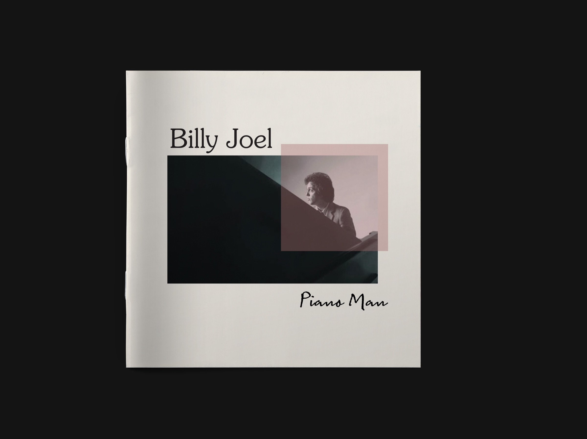
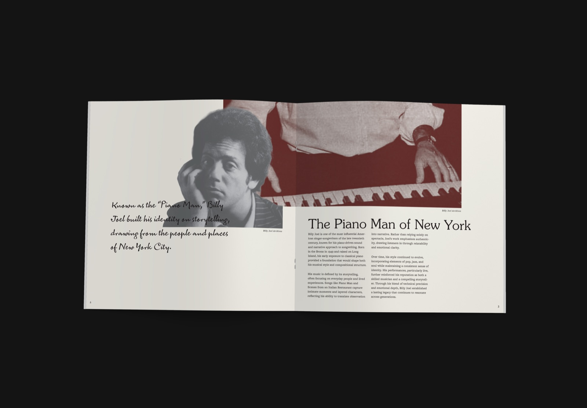
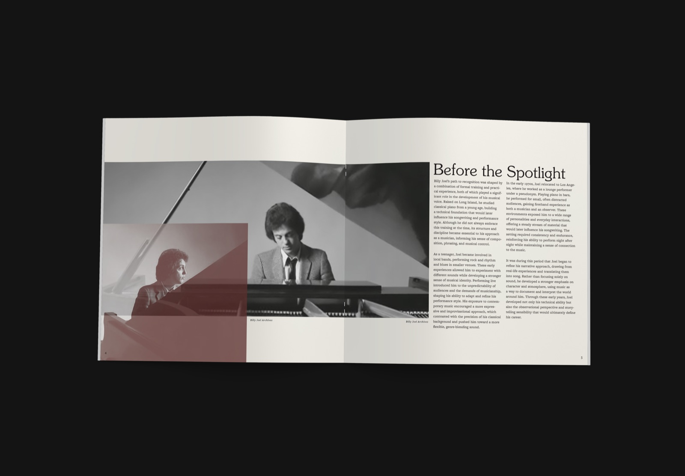
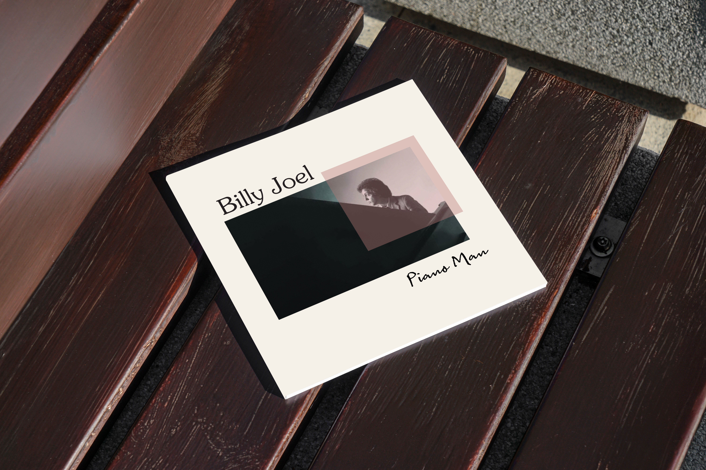

Case study · Editorial · 2026
Band Tribute Booklet
A typographic editorial booklet celebrating the visual identity of a selected band. The project focused on creating a cohesive publication system that translated the band's music and personality into print through hierarchy, pacing, imagery, and expressive typography.
Overview
Challenge
Rather than simply documenting the band, the goal was to balance readability with a strong visual atmosphere while maintaining consistency across every spread.
Solution
I built a restrained editorial system around cream, charcoal, and burgundy, pairing serif typography with archival imagery, handwritten textures, and a clear grid.
Outcome
The 16-page booklet celebrates Billy Joel’s introspective songwriting through a cinematic sequence of spreads, lyrics, discography, and archival references rather than a conventional commercial portrait.
02 — Final



